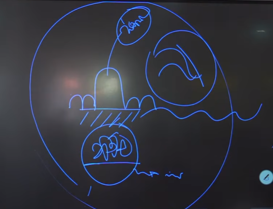

නමෝ තස්ස භගවතො අරහතො සම්මා සම්බුද්ධස්ස ... !!!
සත්වත්වයේදී කාය කර්ම, වචී කර්ම, මනෝ කර්ම සකස් වන්නේ අරමුණු වෙනුවෙන්ය. එසේ අරමුණු වෙනුවෙන් ක්රියාත්මක වීමට නම් අරමුණු නිබ්බන්ති, අභිනිබ්බන්ති ලෙස වැඩීම සිදු විය යුතුය. අරමුණක ප්රකටත්වය සකස් වනු ලබන්නේ එසේ වැඩීම සිදුවන නිසාය. එලෙසින්ම අරමුණ ප්රකට වීමට ස්කන්ධ පංචකය අවිද්යා, කර්ම, තණ්හා, ආහාර වශයෙන් අනෙකුත් හේතූන්ගේද යෙදීම සිදුවීමෙන් සකස් වේ. මෙසේ නොයෙකුත් ධර්මතා යෙදී ප්රකට වන අරමුණට ක්රියාත්මක වීම සාමාන්ය සත්ව ස්වභාවයයි. සම්මුති අතීතයේදී සකස් වී කර්ම ශක්තීන් ලෙස ඇත්තාවූ අනේකවිධ ධර්මතා වර්තමාන විපාක වශයෙන් යෙදීමේදී එහි සත්ය නොදන්නා කමින් (විපාකයක් ලෙස) වර්තමාන අරමුණ සමග යෙදෙන්නාවූ පාපිය ධර්මතා හේතු වෙමින් නැවත එසේ යෙදුනාවූ විපාකයට කර්ම සෑදීම වශයෙන් දුක්ඛිත සසර සකස් කරගැනීම සාමාන්ය සත්ව ස්වභාවයයි.
අරමුණු ලෙස වර්තමාන වශයෙන් පංචද්වාර සමග රූපාරම්මණ, ශබ්දාරම්මණ, ගන්ධාරම්මණ, රසාරම්මණ, පොට්ඨාබ්බාරම්මණ, ලෙස යෙදෙන අතර පංචද්වාර සමග අරමුණු නොයෙදෙන අවස්ථාවලදී ධම්මාරම්මණ ලෙස අරමුණු යෙදීම සිදුවේ. එහිදී ප්රසාද රූප 5 (චක්ඛු, සෝත, ඝාණ, ජිහ්වා, කාය), සූක්ෂම රූප 16 (රූප 28 න් ප්රසාද රූප 5 හා ගෝචර රූප 7 න් අන්ය රූප), චෛතසික 52, සිත් 89, ප්රඥප්ති, නිර්වාණය ධම්මාරම්මණ ලෙස මනෝද්වාරය සමග සෘජුව යෙදීම සිදුවේ. මෙසේ ඒ ඒ ආයතන සමග යෙදෙන්නාවූ බහිද්ද අරමුණු යෙදීමෙන් මුල් උපත (ස්කන්ධ පංචකයෙකන්) අනාත්මීයව සකස් වන අතර එසේ සකස් වූ ස්කන්ධ පංචකයක නැවත මනෝමූලික භාවයෙන් නැවත සකස් කරමින් බාහිර ආරම්මණ සම්මුති වශයෙන් ඇතැයි සිතා කර්ම සකස් කිරීම සත්වත්වයේ සාමාන්ය ස්වභාවයයි. බාහිර වශයෙන් යෙදෙන්නාවූ ආරම්මණයන්හි කිසි දිනෙක සම්මුති වශයෙන් සකස් කරගන්නා අර්ථයන් එනම් ගස, ගල, බල්ලා, සන්ථාර ශබ්දය ආදී දේ හමුවන්නේ නැත. එය හුදෙක් ගෝචර රූප වශයෙන් යෙදෙන්නාවූ හේතු ධර්මතා වන අතර එසේ සම්මුති අර්ථයන් බාහිර විමසීම සිදුවනු ලබන්නේ සත්වයා කලක සිට සකස් කරගත්තාවූ පුරුදු (ආශ්රව) ධර්මතා නිසාය.
අරමුණු එසේ බාහිර වශයෙන් යම් සවිඥානික හා අවිඥානික වස්තූන් ලෙස විමසීම සිදුවන්නේ ආයතන සමග අරමුණු (තින්නන් සංගති) යෙදීමන් පසුව සිදුවන්නාවූ මනෝමූලික විපල්ලාසයක් නිසාය. එලෙසින් වර්තමාන අරමුණ වෙනුවෙන් සකස් වී ඇති අතීතාරම්මනයන් (දිට්ඨ, සුත, මුත, විඤ්ඤාත ලෙසින් සකස් වූ) සමග සැසදීම මනෝමූලිකව වන්නාවූ කෘත්යක් වන අතර සිතෙහි පවත්නා අරමුණු ගැනීමේ වේගය නිසා එය තේරුම් ගැනීමට හැකියාවක් නැත එලෙසින් සත්වත්වය සෑම විටම ඵලය වන ස්කන්ධ පංචකය බාහිර ඇතැයි සිත එයට කාය, වචී, මනෝ කර්ම සකස් කිරීම සිදු කරනු ලැබේ. සම්මුති වශයෙන් ආයතනයන් වලින් දිට්ඨ, සුත, මුත, විඤ්ඤාත සකස් වන බව දැනගනු ලැබුවත් (මගේ කනට ඇසුනා, මගේ ඇසට පෙනුනා ලෙසින්) එය එසේ නොවන බව අවබෝධ කර ගත යුතුවේ. සත්ය වශයෙන් (පරමාර්ථ ලෙස) ආයතනයන්හි ස්වභාවය නම් එය දශක කලාප (පඨවි, අපෝ, තේජෝ, වායෝ, වර්ණ, ගන්ධ, රස, ඕජා, ප්රසාද රූපය, ජීවිතෙන්ද්රි) වශයෙන් ඒ ඒ මොහොතට අරමුණ සකස් වීම සඳහා යෙදෙන්නාවූ රූප කලාපයන්වේ. එසේ අරමුණ වෙනුවෙන් අනෙකුත් හේතු ධර්මතා සමඟ සකස් වීම හැරෙන්නට සත්වත්වයේදී සිතා සිටින්නාවූ පෙනීම, ඇසීම, දැනීම, දැනගැනීම ආදී කෘත්යයන් සිදු කිරීමට ආයතනයන්ට කිසිඳු හැකියාවක් නොමැති බව වටහා ගත යුතුවේ.
එලෙසම ද්වාර/ආයතන වල යෙදීම වශයෙන් හඳුනා ගත යුත්තේ විපාක වශයෙන් යෙදෙන්නාවූ අරමුණු මූලික ස්කන්ධ පංචකය සකස් වීමටත් එසේ මූලිකව සකස් වූ ස්කන්ධ පංචකය නැවත මනෝමූලිකව සකස් කරගනිමින් බාහිරින් සකස් වූ අරමුණ නැවත විමසීමට යෙදෙන්නාවූ ධර්මතාවයන් වශයෙනි. තවද අරමුණක් වෙනුවෙන් ස්කන්ධ පංචකයන් සකස් වීමට නම් අරමුණ සමඟ ඒ ඒ අවස්ථාවන් වලදී මූල විඤ්ඤාණයේ යෙදීම සක්රීයව සිදුවිය යුතුවේ එනම් අවකාශයේ කෙතරම් අරමුණු ඇතත් ඒ අරමුණු ගැනීම සඳහා මූල විඤ්ඤාණය අදාළ අරමුණ සමඟ යෙදීම සිදුවිය යුතුය එසේ නොමැතිව ස්කන්ධ පංචකයන් සකස් වීම සිදුවන්නේ නැත. එලෙසින් මූල විඤ්ඤාණ යෙදීම නිසා කාලාත්රයේම දැනගනු ලැබුවේ රූප, වේදනා, සංඥා, සංස්කාර ස්කන්ධයන් විඤ්ඤාණයෙන් දැනගනිමක්ම වේ (විඤ්ඤාණ නම් දැනගැනීම වේ). එලෙසින් සත්වයා අත්දැකීම්/අත්විඳීම් ලෙස විඳීම සකස් කරගනු ලබන්නේ චෛතසික (නාම) ධර්මතාවයන් ඒ ඒ ස්වරූපයන්/ගුණයන් වන බව අවබෝධ කර ගත යුතුවේ. එනම් විඤ්ඤාණ අත්දැකීමක් වේ.
චෛතසික (නාම) ධර්මතා 52 එකිනෙකට වෙනස් වන්නාවූ ගුණයන් සමඟ අරමුණ වෙනුවෙන් සිතත් සමඟ සතර සම්ප්රයෝග ලක්ෂණ වශයෙන් එකට ඉපදීම සිදුවේ. මෙසේ සිතත් සමඟ එකට ඉපදීමේදී සියළු නාම ධර්මතා සිතත් සමඟ එකට නොඉපදෙන අතර ඒ ඒ අරමුණේ ඇත්තාවූ ස්වභාවය අනුව (චෛතසික වෙන් වෙන් වශයෙන් ගෙන ස්වභාවය බලන්න) නාම ධර්මතා සිත සමඟ ඉපදීම සිදුවේ. එසේ යෙදෙන්නාවූ නාම ධර්මතාද වෙන් වෙන් වශයෙන් ගත් කල අරමුණට යෙදීම තනිව සිදුකල නොහැකි බව අවබෝධ කරගත යුතුය එනම් අරමුණෙ ස්වභාවය (ඉෂ්ට, අනිෂ්ට වශයෙන්) ගැනීමට සමූහ වශයෙන් සිතත් සමඟ යෙදීම සිදුවේ (චිත්ත චෛතසික වගුව බලන්න). එලෙස විවිධාකාරයෙන් යෙදෙන්නාවූ නාම ධර්මතා හේතු කරගෙන සිත සකස් වීම නිසා ඒ ඒ ස්කන්ධ පංචකයන්ගේ විඳීම් ස්වභාවය එකිනෙකට වෙනස් වීම වෙනස් වන බව අවබෝධ කරගත යුතුව ඇත. මෙසේ සකස් වන්නාවූ ස්කන්ධ ධර්මතාවයන් විඤ්ඤාණය විසින් දැනගැනීම් වශයෙන් සකස් වීමේදී පාපීය ධර්මතා නිසා ඇලීම් (වටිනාකමක් දුන් ස්කන්ධ) සකස් වන අතර එලෙස ස්කන්ධ වලට ඇලීම නිසා උපාදානස්කන්ධ මට්ටමට මූලික ස්කන්ධ පංචකයන් නිබ්බන්ති, අභිනිබ්බන්ති වශයෙන් වැඩීම හේතුවෙන් සකස් වීම සිදුවේ.

කාලාත්රයේම සත්ව ක්රියාකාරිත්වය වර්තමාන ස්කන්ධ පංචකයන් හේතුවෙන් සකස් වන්නාවූ කාය, වචී, මනෝ කර්මයන් ය. වර්තමාන වශයෙන් සකස් වී නිරුද්ධ වී යාම් වශයෙන් ද එසේ ඇතිවී නැතිවී යන ස්වභාවය නිසා අනාගතයක් පවතී යන සිතුවිල්ල නිසා "නිච්ච" ස්වභාවය සකස් කර ගැනීම සාමාන්ය සත්ව ස්වභාවය වේ. එනම් ස්කන්ධ නිරුද්ධ වී ගියත් නිරුද්ධ වන ස්කන්ධයන් නිසා සකස් වූ මතක (නිරුද්ධ වූ අතීත ස්කන්ධ විඤ්ඤාණයෙන් අරමුණු කිරීමේ හැකියාව) ස්වභාවයන් චිත්ත සන්තානය සමඟ පැවතීම නිසා මෙසේ ස්කන්ධ පංචකය "නිච්ච" වශයෙන් ගැනීම උත්සහයක් නැතිව සිදුවන්නකි. එලෙසින් අතීතානාගත වශයෙන් අරමුණු ගැනීමේ හැකියාව විඤ්ඤාණයට ඇත්තේ වර්තමාන ස්කන්ධ පංචකයන්ගේ ඇතිවී නැතිවී (ක්ෂණික නිරුද්ධ වීම) යන ස්වභාවය නිසාය. එලෙසින් නිරුත්සාහයෙන් කාලය නමැති හැඟීමක් සකස් වීම සිදුවන බව අවබෝධ කර ගත යුතුය. එලෙසින්ම චිත්ත චෛතසික ධර්මතවයෝ සකස් වන්නාවූ ස්වභාවයන් එනම් එකත්ත, නානත්ව ආදී න්යායන් නිසා ඵලය (ස්කන්ධ පංචකය) සකස් වීම වෙනස් වන අතර විඤ්ඤාණයාගේ දැනගැනීමේ කෘත්යය ඒ ඒ ආකාරයට වෙනස් වීම් වශයෙන් වෙනස් වීම නිසා පංච උපාදානස්කන්ධය "නිච්ච" ස්වභාවයෙන් ගැනීමද සත්වයන්ගේ සාමාන්ය ස්වභාවය වන අතරම එලෙස සැකසී තිබීමද ඒ ඒ නාම රූප ධර්මතා වෙනස් වීම වශයෙන් ඵලය සකස් වීමට යෙදීමද හේතු කොටගෙන සසරේ දුක සකස් වීම සිදුවන බව වටහා ගත යුතුවේ.
ස්කන්ධ ක්රියාකාරිත්වය (ධර්මතා සමූහයක් එකට අරමුණක් වෙනුවෙන් ක්රියාත්මක වීම) නිසා මෙසේ නිච්ච ස්වභාවයෙන් ගන්නා ස්කන්ධ පංචකයන් වල සකස් වීම සිදු වුවත් යෙදෙන්නාවූ හේතු ධර්මතාවයන්ගේ පවත්නා වූ දුබලත්වයන් නිසා ක්ෂණික නිරෝධ වීමක් සිදුවේ. එසේ ක්ෂණික නිරෝධවීමක් සිදු වුනත් විද්යමාන මොහොත වන වර්තමාන මොහොතට විපාක වශයෙන් යෙදෙන්නාවූ හේතු ධර්මතාවයන් යෙදී සකස් වන්නාවූ ස්කන්ධ පංචකයන් අතීතානාගත වශයෙන් අරමුණු කිරීමට විඤ්ඤාණයට ඇති හැකියාව නිසා ඵලය පමණක් ඇසුරු කරන්නාවූ සත්වයන් එසේ සකස් වූ ස්කන්ධ පන්චකයන් බාහිර ඇති ධර්මතා ලෙස ගැනීම සිදුවන්නේ සකස් වන ධර්මතා නිච්ච වශයෙන් ගැනීම නිසා බව අවබෝධ කරගත යුතුය.
එකත්ත, නානත්ව ආදී න්යායන් ලෙස ස්කන්ධ පංචකයන් සන්තති ලෙස සකස් වන බව ඇතත් විද්යමාන මොහොත ලෙස ඇත්තේ වර්තමාන මොහොත පමණකි. එක් බවයක ප්රතිසන්ධි, චුති ආදී ඒ ඒ මොහොතවල් නම් කරත් ඒවා ඒ මොහොතට සකස් වී නිරුද්ධ වී ගියාවූ ස්කන්ධ පංචකයක් බවද එසේ නිරුද්ධ වී ගියාවූ අතීත පංච උප්දානස්කන්ධයක් විඤ්ඤාණයෙන් අරමුණු කිරීමක් පමණක් ඇති බව දැනගත යුතුවේ. මෙලෙස ඒ ඒ ධර්මතා දැනගැනීම් වශයෙන් ඇත්තාවූ සංසාරය යන සංකල්පය මනෝ මූලික ස්වභාවයකි. සත්වයාගේ සම්මුති උපත ඒ ඒ බවයන් වල සිදුවන්නා වූ ක්රියා හේතු කොට ගෙන මෙසේ ඇසුරු කලත් සත්ය වශයෙන් (පරමාර්ථ) වශයෙන් ගැනීමේදී ඇත්තේ මේ මොහොතට නාම, රූප ධර්මතා සමූහයක් විඤ්ඤාණයෙන් දැනගැනීමක් පමණකි. නමුත් නුවණින් විමසා ක්රියාකාරිත්වය අවබෝධ කරගැනීම සඳහා (ලෞකික සම්මා දිට්ඨිය සඳහා) මෙහි ක්රියාකාරිත්වය අප ධර්මානුකූලව විභජනය කර දැනගත යුතුව ඇත.
අරමුණකට නාම රූප ධර්මතා සමූහයක් (ස්කන්ධ පංචකයන්) විඤ්ඤාණයෙන් දැනගැනීමක් වන වර්තමාන මොහොත නිච්ච ලෙස නොගැනීම සඳහා සකස් කරගත යුතු නුවණ නම් වර්තමාන මොහොත විමසීමේ කෘත්යයි. එනම් විද්යාමාන මොහොත හේතු ඵල වශයෙන් විමසීමයි (ධර්මතා 18). ආර්ය සත්ය දේශනාවේදී විද්යමාන මොහොත විමසීම සඳහා සතර සතිපට්ඨානය අනුගමනය කරමින් වර්තමාන මොහොත විමසිය යුතු බව භාග්යවතුන් වහන්සේ දේශනා කරන ලදී. සතර සතිපට්ඨානය අනුව සතිය පිහිටුවීමේදී වර්තමාන ක්රියාකාරී ඒකකය වන ස්කන්ධ පංචකය සකස් වීම නුවණින් විමසීම සිදු විය යුතුය. නමුත් සම්මුතියේදී එසේ සකස් වන්නාවූ එක මොහොතක් විමසීම නොකළ හැකි දෙයක් ලෙස පවතින අතර එසේ නම් එසේ සකස් වී ප්රකටත්වය හමුවන්නාවූ ස්කන්ධ පංචකයක් සකස් වීම වෙනතෙක් කෘත්ය සමූහ වශයෙන් නුවණින් විමසීම සිදු කල යුතුය. එනම් අරමුණ ප්රකටත්වය දක්වා වූ සකස් වූ සමස්ත කෘත්යන් විමසීම වේ (එක අරමුණක ප්රකටත්වය ගොඩනැගෙන ආකාරයයි/ අරමුණකට සිත් පහල වීමේ ක්රියාවලිය). (මුල් උපත නිබ්බන්ති, අභිනිබ්බන්ති ලෙස වැඩි සම්මුති ආකාරයෙන් බාහිර සවිඥානික හා අවිඥානික වස්තූන් හමුවීම දක්වා ක්රියාවලිය විමසීම).
සම්මුතියේදී අරමුණේ ප්රකටත්වය සකස් වීම සිදුවීම එක් ආයතනයකින් පමණක් සිදුවන්නාවූ ක්රියාවක් නොවේ. යම් අරමුණක් සම්මුති ආකාරයෙන් දැනගැනීම සිදුවන්නේ ආයතන කිහිපයක් එකට ඒ අරමුණ වෙනුවෙන් සකස් වන්නාවූ ස්කන්ධ පංචකයන් එකතු වීම් වශයෙන් වන අතර එසේ එකතු වීමෙන් සළායතන මට්ටමින් අරමුණෙ ප්රකටත්වය සකස් වීම සිදුවන බව අවබෝධ කර ගත යුතුවේ.
ප්රතිසන්ධිය සකස් වීමට යෙදෙන්නාවූ අරමුණු ලෙස (පංච උපාදානස්කන්ධය) කර්මය, කර්ම නිමිත්ත, ගති නිමිත්ත යන්නාවූ ධර්මතාවලින් එක් ධර්මතාවයක් මුල් වෙමින් සත්වයාගේ වර්තමාන බවයේ ප්රතිසන්ධිය ඒ ඒ සත්ව තල (පංච වොකාර) වල සිදුවන අතර එසේ ප්රතිසන්ධිය සකස් වනවාත් සමගම පෙර පසු නොවී සකස් වන්නාවූ ද්වාර/ආයතන/භූමින් 6ක් සකස් වීම සිදුවේ. ඒ සමග මූල විඤ්ඤාණයේ සකස් වීම ප්රතිසන්ධි කෘත්ය නිමවනවාත් සමගම සිදුවේ. මෙසේ සකස් වූ ආයතනයන් යෙදී අරමුණ සකස් වීමට අජ්ජතික ධර්මතා සමග යෙදවීම සිදු කරනු ලබන්නේ ස්පර්ශයෙනි එනම් ඵස්සයයි. ආර්ය සත්ය දේශනාවේදී කෙටි වශයෙන් ඵස්සය ලෙස දේශනා කලත් එහි සැබෑ යෙදීම නම් සම්ඵස්සයවේ එනම් පාපීය ධර්මතා සමග යෙදුනු බවවේ. දේශනා පාළියෙහි චක්ඛු, සොත ආදී ඒ ඒ ආයතනයන්හි ඵස්සය යෙදීම චක්ඛු සම්පස්සය, සොත සම්පස්සය ආදී ලෙසින් ඒ ඒ ආයතනය හා නාම ධර්මතා ඵස්සය සමග යෙදෙන ආකාරය දේශනා කරන ලදී.
ඒ ඒ ආයතනයන් යෙදී අරමුණ ප්රකටත්වයට පැමිනීමටනම් අරමුණ වෙනුවෙන් ඒ ඒ ආයතනයන් මූලික වෙමින් සිත් වැලක් සකස් වීම සිදු විය යුතුය. මෙසේ සිත් සකස් වීමේදී මුල් උපතේ කෘත්ය අවසන් වූ පසු ඒ අරමුණම ගෙන සිත මනෝද්වාරයේ සකස් වීම සිදුවන අතර එසේ සකස් වීම කිසි විටෙකත් වෙනස් නොවන ක්රියාවලියකි. අරමුණ ප්රකට වීමට නම් යම් එක් අරමුණක් වෙනුවෙන් ආයතනයන් කිහිපයක අරමුණු එක් කොට එම අරමුණ සඳහා සිත් සකස් වීම මනෝද්වාරයෙන් සිදුවන අතර එසේ අරමුණ වෙනුවෙන් යෙදුන සියළු ආයතන එක් කොට සිත් සකස් වීමේදී සිදුවන්නේ සලායතනය කෘත්ය වේ. සත්වත්වයේදී අත්දැකීම ලෙස ප්රකට වන්නේ මෙසේ සළායතන කෘත්ය වන අතර එසේ සකස් වන්නාවූ කෘත්ය නුවණින් විමසීම සිදුකිරීමෙන් ඒ ඒ ආයතනයන් යෙදී සකස් පංච උපාදානස්කන්ධ සමූහයක් එකක් කොට සම්මුති වශයෙන් ගෙන ඇති බව වැටහීමට නියමිතවේ. එනම් එක් අරමුණක් වෙනුවෙන් දිට්ඨ, සුත, මුත, විඤ්ඤාත ආකාරයන් වලින් සකස් වූ වෙන වෙන ස්කන්ධ සමූහයක් සළායතන වශයෙන් යෙදී සකස් වූ ඵලයක් සම්මුති වශයෙන් විමසීම යන බවයි.
සළායතන අත්දැකීම නිච්ච ස්වභාවයෙන් ගැනුනත් එහි පවත්නා සත්ය ස්වභාවය නම් මනෝ මූලික සකස් කරගැනීමකි. අතීතානාගත වශයෙන් වර්තමාන මොහොතට අත්දැකීමක් සකස් කරගන්නේ නම් එය සිදුකල යුත්තේද මනෝමූලිකව එසේ ඒ ඒ ආයතන සමග අරමුණ වෙනුවන් සකස් වු අත්දැකීම් රාශියක් සළායතන මට්ටමින් සකස් කරගනිමින් වීම අවබෝධ කර ගත යුතුය. මෙසේ වර්තමානයේ අරමුණට යෙදෙන්නාවූ ගෝචර රූපයන් ඒ ඒ ආකාරයෙන් මුල් උපත නිබ්බන්ති, අභිනිබන්ති ලෙස වැඩිම ඒ අරමුණ වෙනුවෙන් අතීතයේදී සකස් වූ ස්කන්ධයන් ගේ යෙදීමට යෙදී සිදුවන අතර එසේ මුල් ගෝචර රූපය අවසානයේ සම්මුති වශයෙන් ගස, ගල, බල්ලා ලෙස මනෝමූලිකව සකස් වීම ප්රකටත්වයට පැමිණීම සිදුවන බව නුවණින් විමසා අවබෝධ කර ගත යුතුය. අරමුණ මූලික වශයෙන් පනචද්වාරයන් සමග සිදුවන්නාවූ ස්පර්ශය (ඵස්සය) පටිඝ සම්ඵස්සය ලෙසින් හඳුන්වනු ලැබේ. එසේ හඳුන්වනු ලබන්නේ ඕලාරික (රළු) වශයෙන් බහිද්ද අරමුණු අජ්ජතික ආයතනයන් හා යෙදෙන නිසාය.
එසේම මනෝද්වාරය සමග ධම්මාරම්මන යෙදීම අධිවචන සම්ඵස්සය/මනෝ සම්ඵස්සය ලෙස හඳුන්වනු ලැබේ. එසේ හඳුන්වනු ලබනුයේ පෙර සඳහන් කල සිත් 89, සුක්ෂම රූප 16, චෛතසික 52 ආදී ලෙසින් යෙදෙන්නාවූ අරමුණු ඉතා සියුම් ධර්මතා නිසාය.
මෙසේ ඒ ඒ අරමුණු සකස් වීමට යෙදෙන්නාවූ ඒ ඒ අදාල ආයතනයන් සමග යෙදී සිත් පෙළක් සකස් වීම හේතු කරගෙන ප්රකටත්වය (ස්කන්ධ පංචකයන්) සකස් වන බව විමසීමේදී පළමුව ද්වාරය සමග අරමුණක් ගැටීම සිදුවන අතර (තින්නන් සංගතිය) එය විඤ්ඤාණ මූලිකව විමසීමේදී චක්ඛු, සෝතාදී විඤ්ඤාණයන්ගේ සකස් වීම සිදුවීම්වේ. එනම් මූල උපතේ (ස්කන්ධ පංචකය) සකස් වීම ලෙස ගත යුතුවේ. එසේ ආයතනයන් ඇසුරු කරගනිමින් සකස් වන්නාවූ විඤ්ඤාණයන් සකස් වී නිරුද්ධ වූ පසු එම අරමුණම ගෙන (ස්කන්ධ පංචකය) නැවත සිත මනෝද්වාරයේ පහල වීම සිදුවේ. මෙසේ විපාක වශයෙන් සකස් වන්නාවූ ද්විපංච විඤ්ඤාණයන්ගේ (ස්කන්ධ පංචකයන්ගේ) ප්රකටත්වය සම්මුති වශයෙන් සකස් වීම සිදුවන්නේ මනෝද්වාරිකව සිත් වැල් සකස් වීම මගින්වේ. තවද මෙහිදී දැනගත යුතු කරුණක් නම් වර්තමාන අරමුණ වෙනුවෙන් (ගෝචර රූප) මනෝද්වාරයෙහි සිත් සකස් වීමේදී එම සිත් වල ඇත්තේ වර්තමාන අරමුණ වේ එනම් චක්ඛු විඤ්ඤාණයේ මුල් උපත සකස් වේ නම් එහි අරමුණ වන වර්ණ රූපයම මනෝද්වාරික සිත වල අරමුණ වීමයි (පෙර සිතේ අරමුණ ගෙන සිත මනෝද්වාරයේ පහල වීමයි).
එසේ ද්වාරයක් මුල් වෙමින් එක් අරමුණක් වෙනුවෙන් නානාවිධි සිත් පහල වීම සිදුවුනත් එසේ පහළවන්නාවූ ඒ ඒ සිත් වල (සම්පටිච්චන, සන්තීරණ ආදී වීථියේ සිත් වල) සිදුවන්නාවූ කෘත්යන් එකිනෙකට වෙනස් වේ. එලෙස සකස් වීමේදී මුල් සිත පිළිගැනීම් වශයෙන් සම්පටිච්චන සිතෙහි කෘත්ය වශයෙන් ඒ ඒ සිත් වලින් වෙනම කෘත්ය සිදුවෙමින් අරමුණෙ හොදින් දැනගැනීම ජවන (සිත් 7) සිත් වලින් සිදුවේ. එලෙසින්ම අරමුණ වෙනුවෙන් මනෝද්වාරයේ සකස් වන්නාවූ ජවන් සිත් වලින් මුල් ජවන් වලට වඩා ප්රකටත්වය දැඩි වෙමින් සකස් වීම සිදුවේ.
දේශනාවේ YouTube සබැඳියාව: https://www.youtube.com/watch?v=EOL4a6EktiY